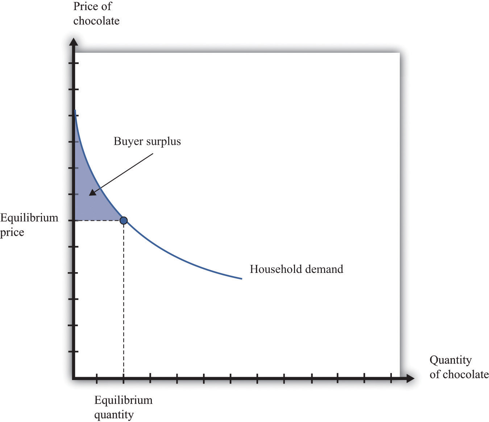
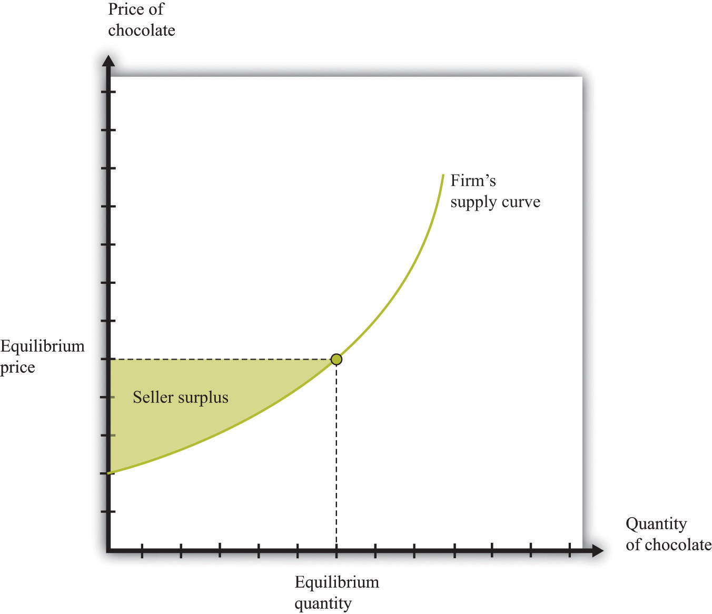
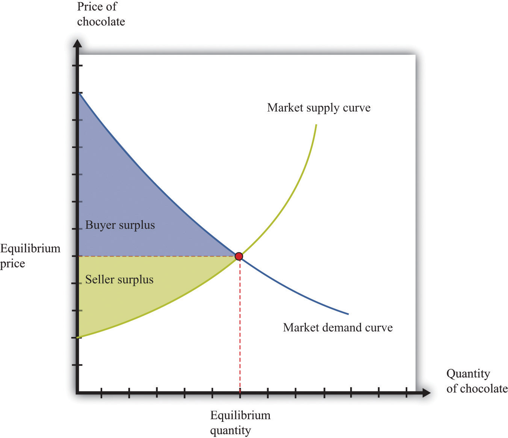
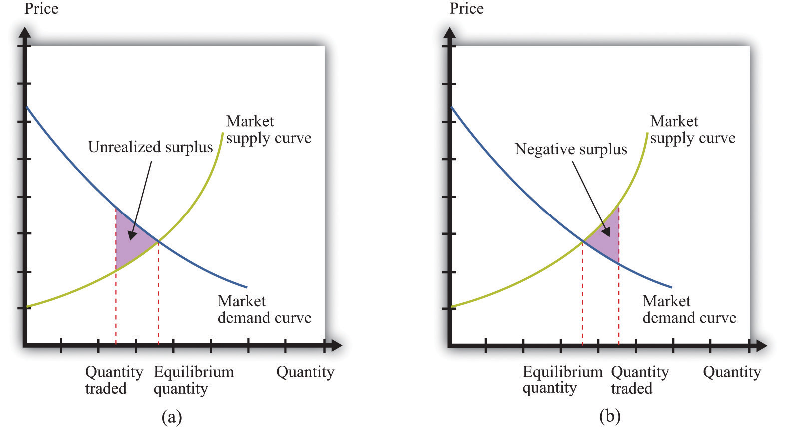

Think back to our story of increasing beer prices. In Figure 8.6 "A Shift in the Supply Curve of an Individual Firm", we saw that an increase in the marginal cost of beer production led to an increase in the price and a decrease in the quantity supplied. In that explanation, we focused on what was happening to supply. But as the supply curve shifted, we moved along the demand curve to a new equilibrium. What was happening to the quantity demanded as the quantity supplied decreased? The answer is that as firms started decreasing their supply, the price in the market began to increase. Consumers of beer, confronted by these higher prices, bought less beer. Perhaps they switched to wine or spirits instead. The higher prices induced the quantity demanded to decrease in line with the decline in supply.
Something remarkable is happening in this story, however. Bad weather has affected the hops harvest, making beer more expensive to produce, relative to other goods and services. Because it is more expensive to make beer, it makes sense—from the point of view of society as a whole—to shift resources away from the production of beer and toward the production of other goods. And it makes sense—from the point of view of society as a whole—for people to consume less of the expensive-to-produce beer and more of other goods and services. If we imagine an all-knowing, all-powerful central planner, whose job is to allocate resources in the economy, we would expect this person to respond to the decrease in the hops harvest by ordering the production and consumption of less beer.
But this is exactly what happens in an economy, simply through the mechanism of supply and demand. The automatic adjustment of prices, resulting from shifts in supply and demand, brings about desirable shifts in production and consumption. Nobody orders producers to produce less or consumers to consume less. These outcomes result from the working of supply and demand.
Similarly, think about our T-shirt example. Consumers decide that they would like to consume fewer Granderson T-shirts. This change in their preferences shows up in the market as a shift in the demand curve, which causes the price of T-shirts to decrease. This decrease in the price encourages producers in the economy to adjust their behavior to fit the changed tastes of households. Firms stop producing Granderson shirts. Again, this is not because anyone has instructed them to do so. The changed tastes of households generate the price signal that induces firms to produce less.
So far, we have answered the question of the chapter by saying that prices change because of shifts in supply and/or demand. This answer is correct. But we could give a different answer from another perspective: prices change in order to provide signals to firms and households about what to produce and what to consume. In a market economy, households and firms decide what to consumer by considering the prices they face. Prices change in response to changes in costs and tastes, and these changes lead firms and households to adjust their decisions in line with the new economic reality.
It is fair to ask whether we should trust prices to play this role. Economics provides a very direct answer to this question: when markets are competitive, the price system delivers an efficient allocation of resources. In the following subsections, we develop the idea that markets deliver efficient outcomes by looking at a single market.
Consider the market for chocolate bars, as shown in Figure 8.5 "Market Equilibrium". At the market clearing price, suppliers and demanders of chocolate bars trade the equilibrium quantity of chocolate bars. Imagine first that each household purchases no more than a single chocolate bar at the equilibrium price. For example, if 200 chocolate bars are sold, then 200 separate households bought a chocolate bar. Not all these households are alike, however: some like chocolate bars more than others. Most of them would have, in fact, been willing to pay more than the equilibrium price for the chocolate bar. Their valuation of a chocolate bar is greater than the price.
Any household that would have been willing to pay more than the equilibrium price gets a good deal. For example, suppose the equilibrium price is $5, but a household would have been willing to pay $7. Then that household receives a buyer surplus of $2.See Chapter 6 "eBay and craigslist" for more discussion. This logic extends to the case where households consume more than one unit. The demand curve of a household indicates the maximum amount that a person would pay for each successive unit of a good. The demand curve shows the household’s marginal valuation of a good. The individual household’s demand curve slopes downward because the household is willing to pay less and less for each successive unit—the marginal unit—as the total quantity consumed increases.
In general, we know that a household purchases chocolate bars up to the point where
marginal valuation = price.The household receives no surplus on the very last bar that it purchases because the marginal valuation of that bar equals price. But it receives surplus on all the other bars because its marginal valuation exceeds price for those bars. Diminishing marginal valuation means that the household obtains surplus from all the chocolate bars except the very last one.
Table 8.3 "Calculating Buyer Surplus for an Individual Household" gives an example of a household facing a price of $5. The first column is the quantity, the second is the price, the third is the marginal valuation (the extra value from the last chocolate), the fourth column measures the marginal surplus, and the last column is the total surplus.
Table 8.3 Calculating Buyer Surplus for an Individual Household
| Quantity (Bars) | Price | Marginal Valuation | Surplus for Marginal Unit | Total Surplus |
|---|---|---|---|---|
| 1 | 5 | 10 | 5 | 5 |
| 2 | 5 | 8 | 3 | 8 |
| 3 | 5 | 5 | 0 | 8 |
| 4 | 5 | 3 | –2 | 6 |
The household is willing to buy three chocolate bars because the marginal value of the third bar is exactly equal to the price of $5. (In fact, the household would be equally happy buying either two or three bars. It makes no substantive difference to the discussion, but it is easier if we suppose that the household buys the last bar even though it is indifferent about making this purchase.) The household would not buy four bars because the marginal valuation of the last unit is less than the price, which means the surplus from a fourth chocolate bar would be negative.
The household obtains surplus from the first and second bars that it purchases. The household would have been willing to pay $10 for the first bar but only had to pay $5. It gets $5 of surplus from this first bar. The household would have been willing to pay $8 for the second bar but only had to pay $5. It gets $3 of surplus for this second bar. It gets no surplus from the third bar. So the total buyer surplus for this household is $5 + $3 = $8. Notice that by following the rule “buy until marginal valuation equals price,” the household maximizes its total surplus from the purchase of chocolate bars.
More generally, the buyer surplus for this household is measured by the area under its demand curve (Figure 8.12 "Buyer Surplus for an Individual Household"). For each unit, the vertical difference between the price actually paid for each unit and the price the household would have been willing to pay measures the surplus earned for that unit. If we add the surplus over all units, we get the area between the demand curve and the price.
Figure 8.12 Buyer Surplus for an Individual Household
The buyer surplus is equal to the area between the demand curve and the price.
Sellers as well as buyers obtain surplus from trade. Suppose you won a used bicycle that you value at $20. If you can sell that bicycle for $30, you receive a seller surplus of $10—the difference between the price and your valuation of the good. It is worth your while to sell as long as the price is greater than your valuation. When a firm is producing a good for sale, the situation is analogous. If a firm can produce one more unit of a good at a marginal cost of $20, then the firm’s valuation of the good is effectively equal to $20. If the firm can sell that unit for $30, it will receive a surplus of $10. The seller surplus earned by a firm for an individual unit is the difference between price and the marginal cost of producing that unit.
Given the price prevailing in a market, an individual firm in a competitive market will supply output such that the marginal cost of producing the last unit equals the price. The firm follows the rule: increase production up to the point where
price = marginal cost.The example in Table 8.4 "Calculating Seller Surplus for an Individual Firm" gives the marginal cost of production for each unit and the surplus earned by a firm from producing that unit. If the firm produced only one unit, it would incur a marginal cost of $1, sell the unit for $5, and obtain a surplus of $4. The second unit costs $3 to produce, providing the firm with a surplus of $2. The third unit provides surplus of $1. The fourth unit costs $5 to produce, so the firm earns no surplus on this final unit. So the firm produces four units and obtains a total seller surplus of $7.
Table 8.4 Calculating Seller Surplus for an Individual Firm
| Quantity | Price | Marginal Cost | Marginal Surplus | Total Surplus |
|---|---|---|---|---|
| 1 | 5 | 1 | 4 | 4 |
| 2 | 5 | 3 | 2 | 6 |
| 3 | 5 | 4 | 1 | 7 |
| 4 | 5 | 5 | 0 | 7 |
| 5 | 5 | 6 | –1 | 6 |
This difference between the price of a good and the marginal cost of producing the good is the basis of the seller surplus obtained by a firm. Exactly analogously to a household’s buyer surplus, we measure the seller surplus by looking at the benefit a firm gets from selling each unit, and then we add them together. For each unit, the seller surplus is the difference between the price and the supply curve (remember that the supply curve and the marginal cost curve are the same thing). When we add the surplus for all units, we obtain the area above the supply curve and below the price (Figure 8.13 "Seller Surplus for an Individual Firm").
Figure 8.13 Seller Surplus for an Individual Firm
The seller surplus is the area between the equilibrium price and the firm’s supply curve.
Toolkit: Section 31.1 "Individual Demand" and Section 31.10 "Buyer Surplus and Seller Surplus"
You can review the concepts of valuation, marginal valuation, buyer surplus, and seller surplus in the toolkit.
So far we have considered the buyer surplus and seller surplus for an individual household and an individual firm. Because the market demand and supply curves are obtained by adding together the individual demand and supply curves, the same result holds if we look at the entire market. We illustrate this in Figure 8.14 "Surplus in the Market Equilibrium", which shows the total surplus flowing to all households and firms in the market equilibrium. The area below the market demand curve and above the price level is the total buyer surplus. The area above the market supply curve and below the price is the total seller’s (producer’s) surplus.There is one slightly technical footnote we should add. In some circumstances, the seller surplus may not all go to the firm. Instead, it may be shared between the firm and its workers (or other suppliers of inputs to the firm). Specifically, this occurs when increases in the market supply are large enough to cause input prices to change.
Figure 8.14 Surplus in the Market Equilibrium
The total surplus generated in a market is the sum of the buyer surplus and the seller surplus. It is therefore equal to the area below the demand curve and above the supply curve.
The buyer surplus and the seller surplus tell us something remarkable about market outcome. If we add together the surplus for all buyers and sellers, we obtain the total surplus (gains from trade) in the market. In a competitive market, this is the maximum amount of surplus that it is possible to obtain—that is, exchange in a competitive market exhausts all the gains from trade.
There are two ways of seeing why this is true. First, we can ask what level of output would give us the largest total surplus. You might be able to see by looking at Figure 8.14 "Surplus in the Market Equilibrium", where the equilibrium quantity yields the largest total surplus. Figure 8.15 "Surplus Away from the Market Equilibrium" explains why in more detail. If there are fewer trades, then some surplus goes unrealized: some transactions that would yield positive surplus do not take place. To put it another way, there are buyers whose marginal valuation exceeds the marginal cost of production but who are unable to purchase the good. By contrast, if there are more trades than the equilibrium quantity, then some trades generate a negative surplus. The marginal cost of producing output beyond the competitive level is less than the goods are worth to consumers.
Second, the following things are true at the market equilibrium:
Combining these two pieces of information, we know that each household’s marginal valuation of the last unit is the marginal cost of producing that unit. As quantity increases, marginal valuation decreases and marginal cost increases. Therefore, if more of the good were produced, the marginal cost of the extra units would be higher than the marginal valuation. By the same argument, if fewer units were produced, the reduction in the household’s valuation would be higher than the reduction in cost. So producing one unit more or one unit less would not be beneficial to households and producers. Remember that it is the adjustment of prices that ensures that an economy trades at the point where supply and demand are equal. Price adjustment allows buyers and sellers to obtain all the gains from trade.
Figure 8.15 Surplus Away from the Market Equilibrium
If the quantity traded is less than the equilibrium quantity (a), then some gains from trade go unrealized. If the quantity traded is greater than the equilibrium quantity (b), then some trades generate negative surplus.
We have been highlighting one of the principal messages in economics: markets are a mechanism to achieve the gains from trade. But are there other ways of achieving the same result? We previously introduced the fiction of an all-knowing, all-powerful central planner. Such a planner tells everyone what they should produce, takes all those goods, and distributes them throughout the economy. The planner tells everybody how much to work at each technology and decides exactly how to distribute all the goods and services that the economy produces.
Should we take this idea seriously or is it only a device to help us think about our theory? The answer is a bit of both. No economy has ever literally been run by a central planner. Historically, though, there have been many examples of so-called planned economies, where government bureaucracies played a major role in deciding what goods and services should be produced. For much of the 20th century, the economy of the Soviet Union operated under such a regime. China also used to be a largely planned economy. North Korea still operates as a largely planned economy.
Neither the Soviet Union nor China enjoyed much economic success under this system. The collapse of the Soviet Union’s economy was a key reason why the country itself collapsed. China eventually changed its system of economic organization to one that gives more primacy to markets. Today, there are very few economies that operate under central planning and none that are significant in global economic terms. However, there are still several economies in which the government plays a significant role in the allocation of resources; so the analysis of the planner remains relevant.
Why were planned economies so unsuccessful? Books have been written on this topic, but there is one key insight. In order to make good decisions—decisions in the interest of individuals in the economy—the planner would need a lot of information. It is simply inconceivable that a planner could have sufficient knowledge about the abilities and skills of different individuals to make good decisions about where and how much they should work. Moreover, the planner also needs to know the tastes of everyone in the economy. Without that knowledge, the planner might instruct them to produce too many chocolate bars or not enough beer. If we think of an economy with millions of inhabitants, all with their own preferences and abilities, it is surely impossible that a planner could be sufficiently well informed to make decisions that are in the interest of all an economy’s inhabitants.